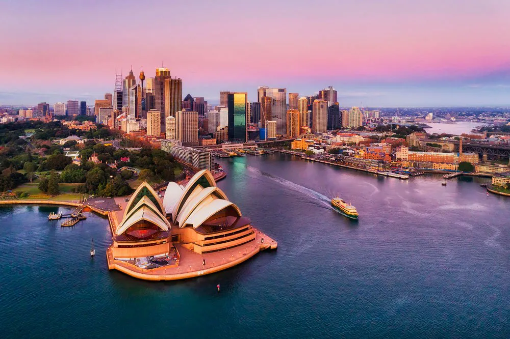
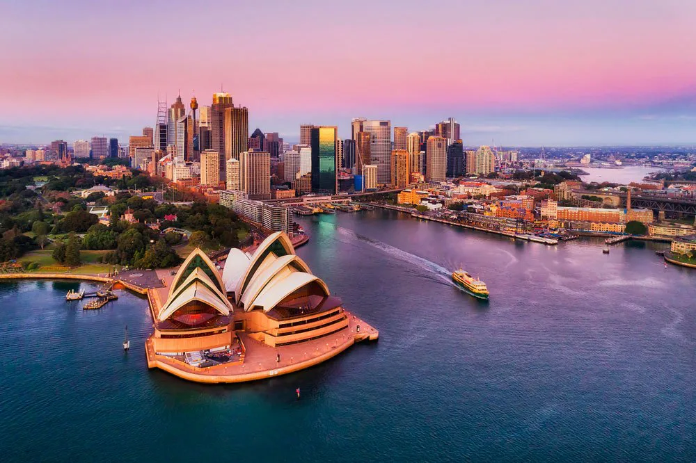

Si te gusta lo lejano, lo diverso, lo cosmopolita, la naturaleza la respuesta es viajar a Nueva Zelanda. Tal vez lo más difícil de ir allí es poder decidir cuál será tu itinerario, hay tanto que hacer que tendrías que pasar unos cuantos meses y luego posiblemente no te querrás ir. A parte de mochilear, esquiar, hacer caminatas, divisar las estrellas, lanzarte de paracaídas, bucear o irte de excursión este país logrará quedarse en tu corazón por siempre.
Auckland es la ciudad más multicultural del país, moderna, con costas y playa, llena de vida de día y de noche, puedes empezar tu recorrido por allí. Si quieres hacer buceo vete a Bay of Island una región muy histórica y turística. Pero si quieres aprender sobre la cultura maorí puedes visitar una Marae, que es donde se reúnen los maorí a mostrar sus costumbres. La Isla Stewart o Rakiura es bastante remota, pero es un lugar ideal para conectar con la naturaleza y disfrutar de sus playas, senderos y bahías. El Parque Nacional de Fiordland deberá estar entre tus lugares para visitar, una gran extensión de tierra que tiene bosques, montaña, paisajes de hielo y cataratas; también está el Parque Nacional Tongairo o la Península de Cormandel. Wellington, la capital cultural del país también te espera con los brazos abiertos en esta aventura por Nueva Zelanda.
 

Quién no quisiera conocer Australia, un país con hermosos paisajes, rico en flora y fauna y además un lugar que acoge de maravilla a los jóvenes. Estarás fascinado en Sídney, donde el estilo de vida permite mucha diversión. Podrás visitar sus famosas playas, entre otras Bondi Beach y sacarte una foto la famosa Opera House. También conocer el Parque Nacional de Nambung y sus arenas rojizas, sin duda ir a bucear a la Gran Barrera de Coral. No podrás dejar atrás Brisbane, una de las mejores ciudades para vivir, llena de parques y jardines, una ciudad que es un motor industrial a su vez; también muy cerca la Isla Fraser y por qué no darse la escapada hasta Tasmania. No regreses a casa sin haber visto los Canguros y Koalas, símbolos nacionales en Australia.
 |
 |